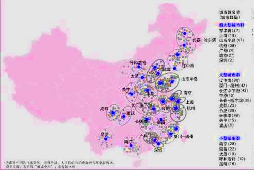

御坂导航 御坂导航页面 御坂导航是一个简单的静态页面，一方面方便于御坂快速的访问御坂重视的网站，也方便于浏览者能快速的浏览到御坂相关的网页页面。 博客列表 博客往事列表 这里是御坂曾经写过的种种文章，因为本博客仍是静态博客，所以御坂只能把大量的文章做成一个博客列表，方便浏览者能够找到曾经的文章。 我的项目 御坂的计划项目 时不时灵感突发，有些有意识的项目计划就被我建立在了Github，欢迎大家访问。 01-02 2018 御坂职业探究与规划（二） 在众多的职位中，无疑两类，一类是针对有经验的人，这一类不一定就是往届生，有些优秀的应届生甚至未毕业的人通过实习和兼职也具有着许多的工作经验... 阅读全文>> 01-02 2018 御坂职业探究与规划（一） 首先，就业总考虑顺序。从行业，城市，职位，企业的顺序进行考虑。行业关系到就业大的范围上的难以程度与未来发展趋势，务必重视。有些行业暂时热门、行业竞争大或者就业专业性要求高，增加了就业难度... 阅读全文>> 12-18 2017 首飞！炸了！ 本文迁移自早期博客文件... 阅读全文>> 12-18 2017 网站更新版面预告 本文迁移自早期博客文件... 阅读全文>> 12-18 2017 项目计划分类 本文迁移自早期博客文件... 阅读全文>> 12-18 2017 性格颜色学？-阅书记 本文迁移自早期博客文件... 阅读全文>> 12-13 2017 二记。微电影那点事 本文迁移自早期博客文件... 阅读全文>>